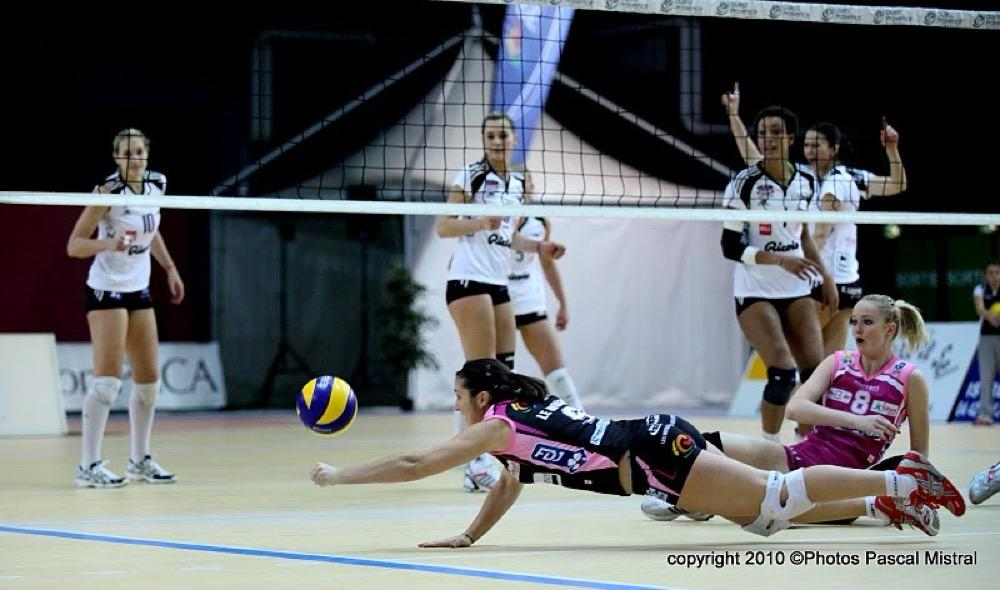
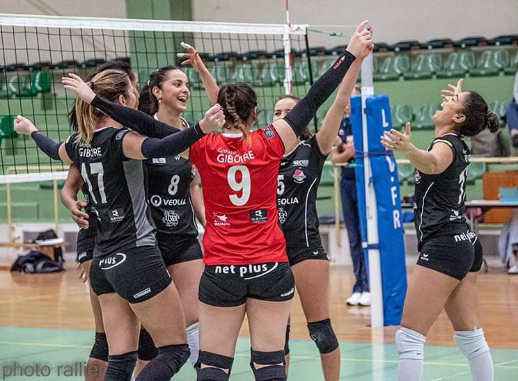
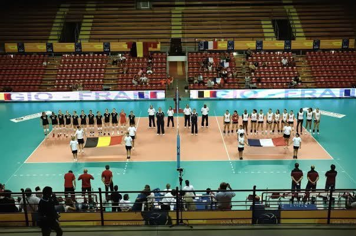

Lénaïg LE MOIGNE
« Ingénieure en Informatique industrielle avec 7 ans d'expérience, j'interviens au cœur des environnements de production pour concevoir, développer et dépanner les systèmes. Alliant la méthode technique à la rigueur acquise au cours de mes 16 années de volleyball de haut niveau (Équipe de France jeune, Pro A, Élite), j'apporte un sens aigu du terrain, de l'engagement, de l'adaptation, un goût pour la performance et une vraie réactivité face aux imprévus du quotidien.
Développé de A à Z dans le cadre d'un projet d'autoformation, ce site web a été pensé pour présenter mon parcours de manière plus vivante, détaillée et claire qu'un CV traditionnel. »
ON TRAVAILLE ENSEMBLE ? CONTACTEZ-MOIParcours parallèles : Ingénieure & Sportive
Ingénieure
Sportive Haut Niveau
Autoformations Numériques sur Internet
Volleyeuse Professionnelle (Poste : Libéro)
Professeur remplaçant de BTS en spécialité Réseau
Volleyeuse Amateur (Poste : Libéro)
Cycle Ingénieur, Electronique et Informatique Industrielle, obtenu
Stagiaire de fin d'études Ingénieure en Programmation
Stagiaire Ingénieure en Programmation
Volleyeuse Professionnelle (Poste : Libéro)
Volleyeuse Professionnelle (Poste : Libéro)
Volleyeuse Professionnelle (Poste : Libéro)
Equipe de France Espoir (Poste : Libéro)
Equipe de France Junior (Poste : Libéro)
Pôle Espoir (Poste : Attaquante)
Equipe de France Cadette (Poste : Libéro)
Compétences



